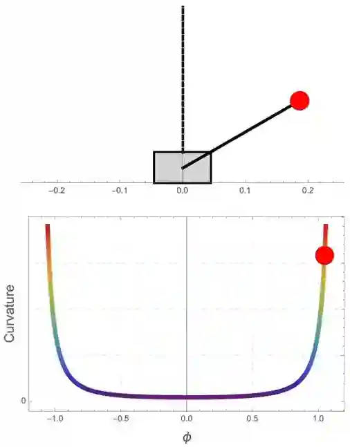
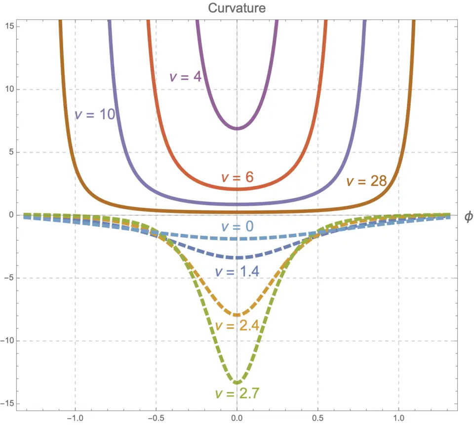
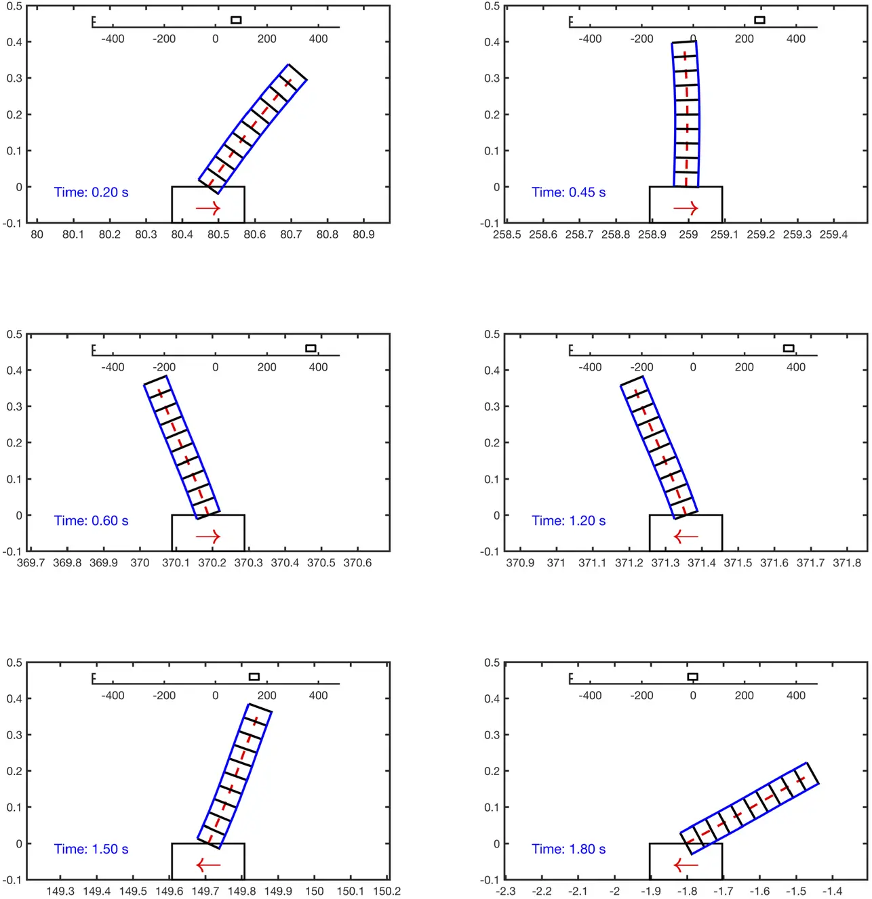

Curvature Shaping Control
|
本文针对非线性力学系统的镇定问题提出了一种曲率塑形控制方法. 例. 车摆系统的曲率塑形控制. 我们仅对小车施加控制$u$使摆保持垂直. 经计算 \begin{equation}\label{eq: sec2_control_law_invertp_detailed} u=\frac{\nu \beta \sin \phi\left(\alpha \dot{\phi}^{2}-D \cos \phi\right)}{\alpha-\frac{\beta^{2}}{\gamma}(1+\nu) \cos ^{2} \phi}, \end{equation} 系统截面曲率$K$
\begin{equation}\label{eq:sec2_curvature_ex1}
K(\phi)=\frac{\gamma D\left[\beta^{2}(\nu+1) D \sin ^{4} \phi+\left(\beta^{2}(\nu+1)-\alpha
\gamma\right)(e \cos (\phi)-D)\right]}{2(e-D \cos (\phi))^{3}\left(\alpha
\gamma-\beta^{2}(\nu+1) \cos ^{2}(\phi)\right)^{2}} .
\end{equation}
其中 $\alpha=m l^{2}, \beta=m l, \gamma=M+m$，以及 $D=m g l$.
根据曲率稳定性判据，平衡点 $\phi=\dot{\phi}=\dot{s}=0$ 的稳定性条件是 \begin{equation} \nu>\frac{\alpha \gamma-\beta^{2}}{\beta^{2}}=\frac{M}{m} . \end{equation} 为了验证控制律 \eqref{eq: sec2_control_law_invertp_detailed} 有效性以及控制增益系数$\nu$是如何影响曲率的，我们使用Mathematica进行了模拟. 车摆系统参数如下：摆质量 $m=0.14 \mathrm{~kg}$，小车质量 $M=0.44 \mathrm{~kg}$，摆长 $l=0.215 \mathrm{~m}$，重力加速度 $g=9.8 \mathrm{~m} / \mathrm{s}^{2}$. |
|


|
Click on the GIF to view it in full size. The loading process may be slow. 受控系统的运动曲线被约束在一个曲率阱中，直观地解释了曲率阱如何吸引摆向其底部移动. It is shown that the motion curve of the closed loop system are trapped in a "curvature well". |


|
研究发现，当 $ \nu > M/m $ 时，出现了具有正曲率的曲率阱，随着 $ \nu $ 增加，这些阱变得更宽、更深. It is shown that the "curvature well" with positive curvatures appear when $ \nu > M/m $ and become wider and deeper as $ \nu $ increases within the domain. |
Stabilization of a Geometrically Exact Beam Hinged on a Cart


|
不施加控制，柔性摆在重力作用下自然下落. Uncontrolled, the flexible pendulum naturally falls under the influence of gravity. |


|
利用几何力学中新发展的场论Hamel形式，我们将受控Lagrange方法推广至无穷维力学系统，并对小车-柔性倒立摆系统构建了实时的镇定算法. By employing Hamel's formalism for infinite-dimensional mechanical systems, We have extended the CL method to infinite-dimensional mechanical systems and developed a real-time stabilization algorithm for the cart-flexible inverted pendulum system. |